I'm 25 years old with a Master's degree in Information system, University of
Maryland, Baltimore County.
At first I intended to be an Automobile designer and completed Bachelors' of mechanical
engineering. One thing lead to another, 2
years went by and I was a full fledged web developer without ever planning to become one.
This Fortunate turn of events led me to develop and design functional, creative, detailed,
and usability oriented websites as well as full stack applications. I ensure that systems, interfaces,
languages and graphics are human friendly, emotive, pleasing, clear and usable with
a touch of mellow smoothness. As a part of my freelancing, I have created several
website themes, such as: Dashboard, Social networking, Web-hosting, blog etc.
2 years ago, I started working on full stack applicaions, primarily MEAN.
Since then I have been creating fully functional web applications. I have worked on
multiple frameworks, some of them are: angular, node, bcrypt, query etc. Also, I have extensively learned lanuages such as HTML, CSS, PHP, JAVASCRIPT and many more.
I have also worked with several CMS(content-management-systems) such as wordpress and
drupal.
When I'm not busy programming, I enhance my djing skills, making funky yet
harmonius beats, mixing tracks to cheer crowd or playing beautiful symphonies on keyboard.
Bachelors of Engineering | Rajiv Gandhi Technical University / August 2010 - june 2014
Masters in Information Systems | University of Maryland Baltimore County / August 2015- May 2017
EXPERIENCE
WebCraft IT — India | Web Architect and System Analyst / June 2015 to August 2015
SparkSoft Corporation. — Baltimore, M.D | Product Developer Intern/ June 2016 to March 2017
UMBC Information Systems Dept. — Baltimore, M.D | Developer Instructor/ Dec 2016 to Present
UMBC Library — Baltimore, M.D | Web Developer/ October 2015 to June 2016
SKILLS
Web Technologies
60%
Styling
65%
Languages
80%
Databases
55%
Services
90%
Version Control
85%
Software
80s%
PORTFOLIO
PORTFOLIO
Dashboard Web Site Template
Blog Web Site Template
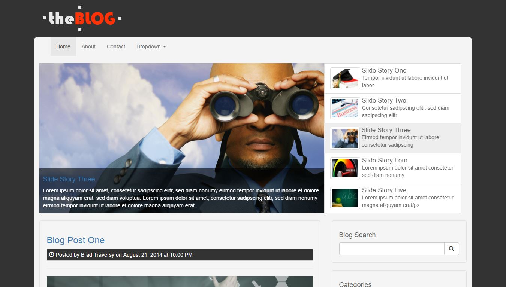
Webhosting Web Site Template
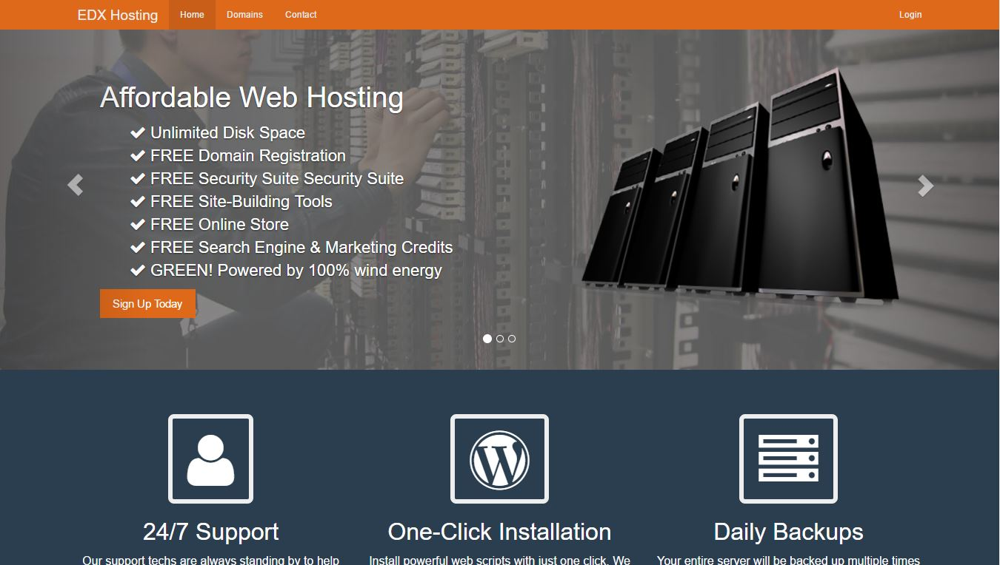
Digital Marketing Web Site Template
E-Commerce Web Site Template
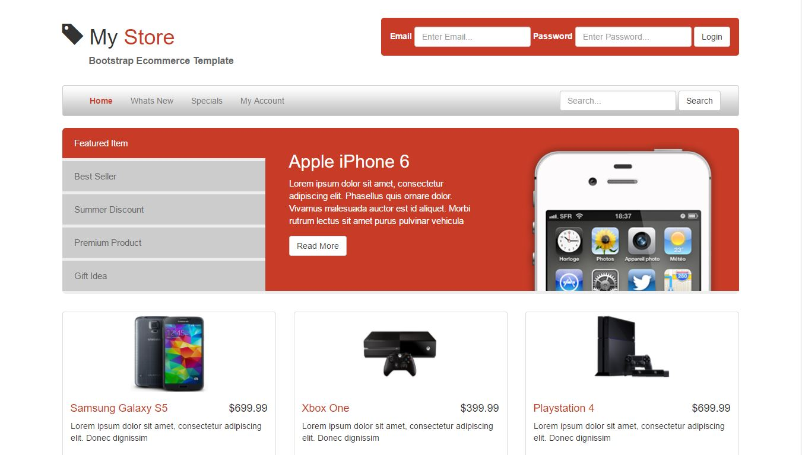
Photosharing App Web Site Template
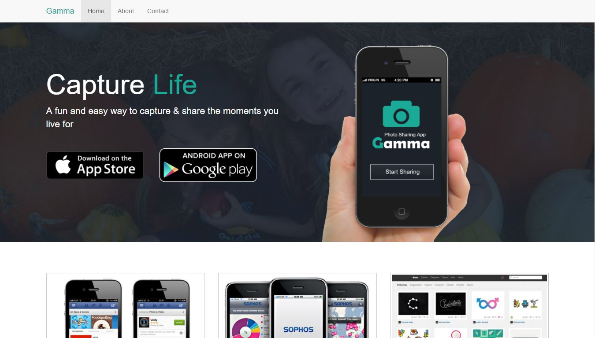
Photo Gallery Web Site Template
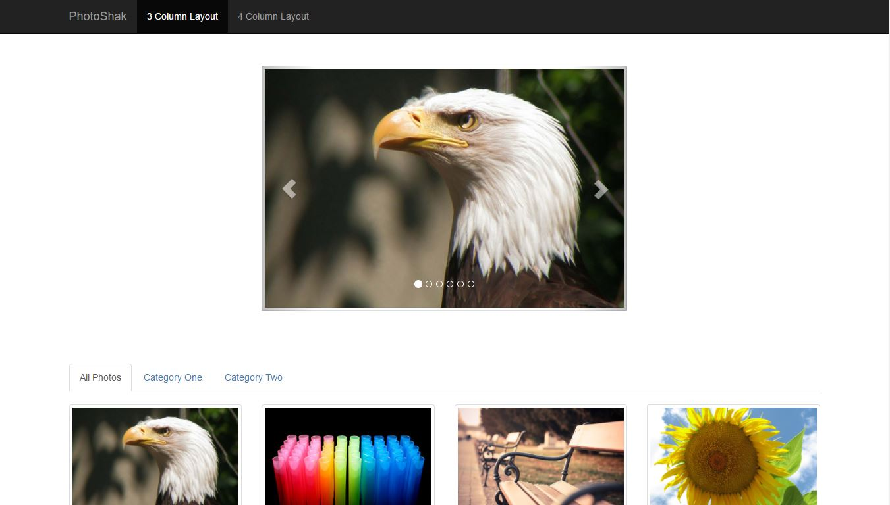
Resume Web Site Template
Social Networking Web Site Template
Business Web Site Template
My tweet web application
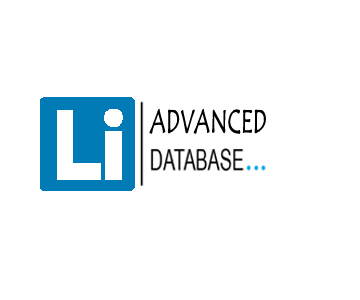
Employee record web application
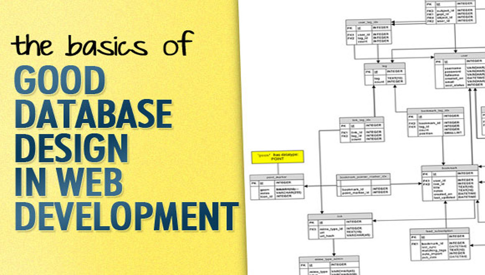
Preview:
we will make a simple application and try to implement some CRUD (Create, Read, Update, Delete) functionalities into it with the help above mentioned technologies.
We will make an employee record system, in which we can insert the details of employee, update the details and delete them. Also, we can retrieve the list of all the employees we have stored in the database.
Let us understand the structure of our application: Installing necessary programs. Creating a folder with necessary packages. Creating front end angular development. Creating angular route, partials and controllers. Creating node server. Creating mongoose schema. Creating express API’s to play with user data. Creating HTML views.
** you will be required to have any of the IDE or text editor to write the codes for this application. For this guide, Visual studio was used to write the codes **
How to run the application in local host
1. Download Node in your system.
2. Open cmd and run 'npm install' -- this will install the npde package manager into your system.
3. Run npm install -g express
4. Run npm install -g body-parser.
5. Run npm install -g mongoose.
6. Another command terminal and run 'mongod' -- this will start the mongo database server.
7. Open Command prompt and run "node server.js".
8. Open http://localhost:3000 **
What is MEAN Stack ?
Full stack development comprises of front-end library to ensure data-binding and views or to build up for client side, database in the back to store the data, a middle ware to help process interact with each other and finally a server. The stack we will be using to create a web application in this course is MEAN stack. Where ‘M’ stands for MongoDb, ‘E’ for Express.js and ‘A’ and ‘N’ for Angular.js and Node.js respectively. In MEAN stack, Angular.js being the client side makes AJAX calls to Express.js which in turn responds in JSON format. Express which runs on Node.js server further communicates with MongoDB as persistent medium.
Ideas Mart System Design
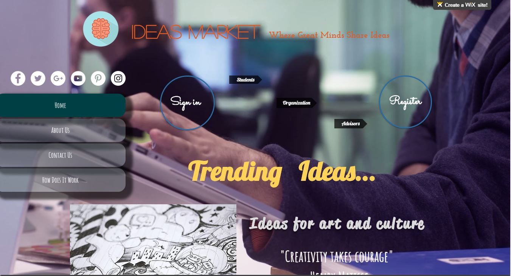
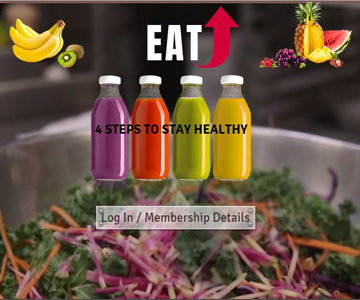
Eatup application System Design
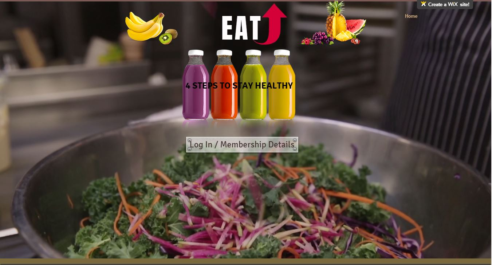
EatUP A Healthy Living Application
HIT658 Spring 2016
Submitted By: Sarthak Bhatt
Introduction
This project will introduce an application that will address obesity, improper diet, and food
deserts in Baltimore, MD. The application will focus on changing food purchase habits through
recommendations provided to the users. The app will be designed to require minimal input from the
user, but will also allow interaction for the motivated user.
Population of Interest
The initial target demographic of our project is obese adult (18+ years old) individuals in
Baltimore City. The CDC defines obesity as individuals with a BMI (body mass index) that of 30.0
or higher.1 According to a 2011 study conducted by the Institute for Health Metrics and Evaluation,
Baltimore City residents ranked higher than the national average in obesity (males 35.4% vs 33.8%,
females 46.1% vs 36.1%). These numbers have increased by more than 6% since the last study was
taken in 2001 (males +6.2%, females +6.9%). Additionally, the percentage of obese females in
Baltimore City was in the worst 10% of all counties in the US.2
Population Health Problem
The race and ethnicity distribution of Baltimore City in 2010 is Black or African American -
63.6%, White- 29.7%, Asian- 2.4%, Some Other Race- 2.2%, Two or More Races- 2.1%, and
Hispanic or Latino 34.2%. The socioeconomic characteristics distribution in Baltimore City is less
than $25,000 - 33.3%, $25,000-$39,999 = 18.1%, $40,000-$59,999 = 17.1%, $60,000-$74,999 =
9.1%, $75,000 and over = 22.5%. The median household income distribution of Baltimore City is
1 Defining Adult Overweight and Obesity. (2012). Retrieved February 13, 2016, from http://www.cdc.gov/obesity/adult/defining.html 2 Institute of Health Metrics and Evaluation. (n.d.). Country Profile: Baltimore City. RetrievedFebruary12,2016,from http://www.healthdata.org/sites/default/files/files/county_profiles/US/County_Report_Baltimore_City_Maryland.pdf
$37,395. The percent of families in Baltimore City living in poverty is 15.2%.3 Family poverty rate
pertains to the percent of families in Baltimore City that have an income below the poverty level.
Food environment includes all of the potential food sources in a community, as well as
messages and advertising related to food. Food purchasing behaviors and diet are affected by the
food opportunities our communities either provide or restrict. In many Baltimore communities
(especially in the City’s food desert areas) the existing food options make eating healthy difficult—
there are very few or no healthy, affordable, fresh options, but many unhealthy options. Thus,
improving the food environment is critical to improving health and eliminating health inequities in
diet-related outcomes, like obesity, heart disease, stroke, and diabetes.3 Fast food density refers to
the number of fast food restaurants per 10,000 residents in Baltimore City. The fast food density in
Baltimore City is 2.4. Carryout Density refers to the number of carry-out restaurants per 10,000
residents in Baltimore City. The Carryout Density in Baltimore CIty is 12.7. Corner Store Density
refers to the number of corner stores per 10,000 residents. The Corner Store Density in Baltimore
City is 9.0. Supermarket Proximity includes the estimated travel time in minutes to the nearest
supermarket using different modes of transportation from the most populated area in Baltimore City.
The estimated travel time to nearest supermarket by car (in min) is 3.7, estimated travel time to
nearest supermarket by bus (in min) is 12.3, and estimated travel time to nearest supermarket by
walking (in min) is 16.6.3
Intervention
It is plain to see that there is a need and there are plenty of apps and personal devices on the
market that are designed to track activity and meals. Most of them require smartphones or additional
wearable devices to track activity or they require manual input of meals. We are proposing the use of
3 Spencer, M., Petteway, R., Bacetti, L., & Barbot, O. (2015). Healthy Baltimore 2015 (Rep.). Retrieved February 15, 2016, from Baltimore City Health Department website: www.baltimorehealth.org
the EatUp app. 25% of Baltimore City residents are affected by food deserts.4 The Baltimore Food
Policy Initiative created a retail strategy and we intend to partner with the city’s food access
initiatives and the Baltimarket to provide a loyalty card type of program. The Baltimarket allows
people to order groceries online for delivery.5
The app, through data provided by the loyalty card program, will take the itemized information, and
create suggestions of healthier choices and alternatives. By offering the loyalty card, EatUp
eliminates the need for the user to search databases or scan barcodes to input data. Substitutions is a
paid app that allows someone to search a database of foods and provides a list of alternative.6 Noom
Coach is a current app that provides a similar function, but also provides suggestions, but requires
the user to log meals.7 EatUp will take the actual shopping habits and offer small suggestions based
on the previous trip working on the premise that you can start to make healthier choices if that is
what you have in your pantry.
The app also incentivizes the user. Points are earned through tracking suggestions that are
followed on subsequent shopping trips. Certain point levels are rewarded with free groceries. More
points are awarded when the data is uploaded. Uploaded data will help to track spending trends by
area, age, etc. Another incentive will be awarded when users update their weight and blood pressure
at store monitors. A gift certificate will be provided to users who update their weight and blood
pressure at prescribed intervals.
By using the loyalty card, EatUp only identifies a user by their phone number. Users with
smartphones can download the app for extended features, but all that is needed is a SMS device to
4 Baltimore County Government. (n.d.). Baltimore Food Policy Initiative. Retrieved February 12, 2016, from http://archive.baltimorecity.gov/files/BFPI 2015 Reader.pdf 5 Virtual Supermarket - Baltimarket. (n.d.). Retrieved February 13, 2016, from http://www.baltimarket.org/virtualsupermarket 6 10 Top Apps For Health Eating. (n.d.). Retrieved February 13, 2016, from http://www.forbes.com/sites/nextavenue/2013/08/27/an-app-a-day-keeps-the-doctor-away/#6d2eac9b175b 7 The 49 Best Health and Fitness Apps of 2015. (n.d.). Retrieved February 13, 2016, from http://greatist.com/fitness/best-health-fitness-apps
receive suggestions via text message. The text messages will come through as an alert for the app on
a smartphone.
Methodology
Participants will be recruited at the B’more Healthy Expo at the Baltimore Convention
Center and at local community health centers and hospitals. During the event staff will introduce
participants to the EatUp mobile application. The selection criteria used to determine our participants
will be based on questions regarding their current eating habits. Also, information regarding the
participants’ demographics, BMI, blood pressure, weight, and family history will be collected by the
staff. 3,000 qualified participants with a BMI > 30 and who are 18 years or older will be accepted to
the program. In order to conduct accurate statistical analysis, baseline data will be collected through
interviews and surveys during registration. Moreover, introductory workshops will be held for
participants where staff will teach them how to use the EatUp mobile application. Furthermore, the
study design for this project will be a longitudinal study. Participants will be followed for 2 years
during which they will be asked to partake in phone interviews and perform self-evaluations.
Key Stakeholders
There will be many stakeholders involved in our project. Our main stakeholder is the
“Population of Interest,” whom we are targeting our service towards. Furthermore, within the city of
Baltimore there are various stakeholders who will support our project with resources. Our staff will
work closely with Grocery Stores, Primary Health Care Staff, Dietetic Service Professionals, and the
Baltimore City Health Department in order to help assess our participants, insure our application is
successfully implemented in the community, and to assist in the creation of informative educational
materials within our application.
Health IT/Informatics Intervention
An application that utilizes data from a loyalty card program to offer healthier lifestyle
alternatives. Application can be viewed via website or smart phone application. Individuals without
access to a smart device will receive notifications via text SMS. Unlike other nutrition tracking
applications, nutritional information is extracted automatically from the loyalty card purchased data
without the need for manual input. Individuals can also use their PC or smart device to find food
sources (restaurants, stores, etc.) based on location. By analyzing the purchased data and location
information, the EatUp application will suggest healthier alternatives.
To promote the usage of the application, reward points will be applied to every purchase and
for continued health tracking (blood pressure, weight) using in-store monitors. Points culminate into
gift cards applicable to future purchases.
Processes, decisions, and actions supported
The process of the EatUp application will be to track grocery shopping choices and locations
to recommend alternatives. The actions of purchasing groceries is the main action tracked. By
tracking this action, the app will be able to make recommendations to change the decisions or
choices of the participants. The decision of the user will be to make healthier food choices and to be
more aware of their health. Furthermore, by providing incentives, the program also supports
continued participation and education.
Users
Our initial target demographic is 18 years or older obese adults with a BMI > 30 who reside
in Baltimore City, Maryland. These individuals must have access to a internet-enabled smart device,
a PC, or a SMS enabled phone.
Inputs
Inputs will be needed to create the database of food items that contain nutritional
information. Nutritional information will consist of a lesson on how to read the nutritional fact sheet
and knowledge of the food pyramid. Moreover, information on healthy fats vs unhealthy fats will be
included, as well as a lesson on how to determine calorie intake based on age, weight, height and
gender.
The initial inputs will be birthday, height, weight, blood pressure and phone number. The
BMI will be calculated by the database. The ongoing inputs will be the itemized shopping items
registered by using the membership card.
Follow-up inputs will be the same health information needed initially, with a 6 month follow-up
Surveillance
The system will perform surveillance on the study group’s grocery shopping habits and
provide feedback to correct unhealthy habits. The surveillance will focus on replacing high fat, high
sodium, high sugar foods with healthier options. For instance, a participant buys 10 Dannon yogurts
with fruit at the bottom. The app would suggest purchasing plain yogurt and fresh fruit to add to it.
This substitution would save 13 grams of sugar and 60 calories.8 The system will be continuously
learning through each shopping trip, and it will be continuously teaching the participants by
providing education through healthy recommendations. Purchasing a store brand plain yogurt may
also save a participant money.
Output
The user will receive daily reminders that include incentivizing messages, food
recommendations, an overall eating status update, and food suggestions either based on previous
food purchases or their current location through location tracking via SMS notifications or
application notifications.
Data Standards
Data Standards used are as follows:
1. ASC X12: Develops standards for electronic interchange related to business transactions such
as order placement and processing, shipping and receiving information, invoicing, payment and cash
application data, and data to and from entities involved in finance, insurance, education, and state
and federal governments.
2. ISO (International organization of standards): Is a network of national standards
institutes from 140 countries working in partnership with international organizations, governments,
industry, business, and consumer representatives.
ISO 215 Technical Committee on Health Informatics (ISO/TC 215) works on the standardization of
health information and communications technology to allow for compatibility and interoperability
between independent systems through the following Working Groups
WG 1: Data Structure
WG 2: Messaging and Communications
WG 3: Health Concept Representation
WG 4: Security
WG 5: Health Cards
WG 6: Pharmacy and Medication
WG 7: Devices
WG 8: Business Requirements for Electronic Health Records
Recruitment
Participants will be recruited at the B’more Healthy Expo at the Baltimore Convention
Center and at local community health centers and hospitals. During the event, staff will introduce
participants to the EatUp mobile application. The selection criteria used to determine our participants
will be based on questions regarding their current eating habits. Information regarding the
participants demographics, BMI, blood pressure, weight, and family history will be collected by the
staff. 3,000 qualified participants with a BMI > 30 and who are 18 years or older will be accepted to
the program. In order to conduct accurate statistical analysis, baseline data will be collected through
interviews and surveys during registration. Moreover, introductory workshops will be held for
participants where staff will teach them how to use the EatUp mobile application. Furthermore, the
study design for this project will be a longitudinal study. Participants will be followed for 2 years
during which they will be asked to partake in phone interviews and perform self-evaluations.
Strategy and Timeframe
The implementation of this project will span four phases. In phase one, the objective will be
obtaining funding through a partnership with grocers and local community health grants such as
Abell Foundation’s Health and Human Service Grant.9 The grant has an October 15th is the deadline
for a December grant award. By obtaining a December grant award, we hope to take advantage of
the spring and summer availability of local farmer’s markets. Part of our presentation to the Abell
Foundation and grocers will be our interest survey that shows interest in the program and willingness
to shop more at the participating stores. The figure below illustrates a sample survey.
Local politicians and press will help bolster influence through PR.
Phase two will be the technical development including database development, application
development, and membership card creation.The database containing barcodes and nutritional values
will be contracted out, as well as the database that will interact with the EatUp system. The
subcontractor will also provide maintenance services such as backups and updates for new products.
This will start upon receiving the first part of funding and will be complete in 90 days.The website
and mobile application will be developed in parallel with the database.The 3,000 EatUp membership
cards will be sourced out and printed as part of phase two.
When phase two is complete, EatUp will be able to go-live. From day one of go-live, the
team will be out in the communities recruiting participants. By not “pre-recruiting,” we hope to
avoid loss of interest, but gain word of mouth advertising in addition to standard methods such as
recruiting from churches, community health centers, health fairs, and local advertising opportunities.
The goal will be to achieve 3,000 signed up participants within 60 days.
The final phase is continuous monitoring and follow up. There will be evaluation periods at 6
month intervals that will include incentives to encourage participants to interact with our health
partners and update initial information (BMI). Over the life cycle of the project, the application will
be providing recommendations to the participants to change grocery shopping habits. Phase four of
the study will conclude after two years of following participants through the program.
Stakeholder Engagement
Successful stakeholder engagement requires a commitment to actively engage with
stakeholders, listen to them, build a relationship with them and then respond to their concerns in a
mutually beneficial way. Stakeholder engagement involves time, resources and commitment. To
make stakeholder engagement successful many steps can be considered, and is essential to the
success of the EatUp app. Becoming subject matter experts allows us to fully understand the
product and in turn fully engage potential stakeholders. Knowing the ins and outs of our app allows
our belief in the product to become apparent. As the producers of this app we must know every part
and detail of it to really show and help potential recruits see the benefits. Other concepts that allow
engagement are:
1. Creating eye catching informative printed materials to distribute to our target audience
2. Creating sales scripts which will be used to work around potential participants negative
reactions to joining our program
3. Demonstrating the benefits and simplicity of the app
4. Selling the product by showing the perks of use such as free groceries, gift certificates along
with personal improvements to the participants overall health.10
Software
EatUp will be a new application. It is a new development that will include interaction with
existing database information. “Calorie Counter PRO MyNetDiary”, was named one of the best
weight loss iPhone and Android apps of 2015 by Healthline.com.11 Calorie Counter Pro similarly
tracks dietary information of foods, but requires the user to scan the barcode of the product or, for
items that are not barcoded, such as produce, search and select from the database. It also contains a
social networking aspect that we do not wish to include. Therefore, we are creating a new
application that eliminates much of the work that has to be done by the user in Calorie Counter and
similar apps, while keeping it simple for security and research purposes. Building our software from
scratch allows us to tailor and control the established vision for this product. Partnering with an
existing application may limit our capability to add or subtract features. When this product is
launched our software will be created on knowledge, resources, data and vision we have at that
moment. As our product grows it will evolve through trial and error, feedback, participant growth
and data gathering. Creating our software will allow it to evolve with EatUp and new ideas will keep
it relevant and marketable.
During development, Java and Python will be the two main sources of back-end
development, database interaction, and creation of the user interface. Website development will be
done on Javascript, HTML 5. During the research period, the need for large servers will not be
10 Stakeholder Engagement Planning Overview. (2004). Retrieved March 03, 2016, from http://www.forumstrategies.com/content/pdf/stakeholder_engagement.pdf 11 http://www.healthline.com/health/diet-and-weight-loss/top-iphone-android-apps#2
necessary, but, if the project continues and expands to the general public, there will be a need for
Oracle servers.
Interfaces
Inter-app communication will be available within our mobile application by completing
agreements with other systems. There will be a one way interface to send messages to the
participants. There will also be an interface with the database that allows a product’s barcode to be
searched in the database. It will then retrieve calorie, fat, sugar and sodium information. The EatUp
application will be able to take that information and make suggestions that are healthier alternatives.
These are the messages sent out. Our system will also communicate with grocery stores through a
rewards card that will be used to deliver information on what the user makes into our mobile
application itself.
Workflow
EatUp creates a simple workflow. It allows minimal interaction with the users, but sends
suggestions. It simply requires users to have their bonus/membership card scanned when doing
grocery shopping. Users with the smartphone application can follow up on suggestions by looking
up recipes associated with substitutions that are offered and can search health tips. The application
eliminates user interaction for the uninvolved users, but allows interaction by more interested users,
but both groups are tracked via the same information. Smartphone users can also track their point
progress as well as BMI and blood pressure from the application. Non-smartphone users can still
access this information, it just requires that they sign into the website to do so.
Testing and Quality Assurance
It is imperative the launch of the EatUp app goes as smoothly as possible, problems could
lead to stakeholders/user abandonment. Following and utilizing the software development life cycle
along with the Waterfall Model on production, testing, and QA, we can create and evaluate:
requirements, design, implementation, verification and maintenance. The aim during the testing and
quality assurance stages or "build stage" is to flush out any errors or flow complications for
correction and adjustment.12
Privacy and Security
The following diagram demonstrates the security measures for EatUp.
While the participants are only identified by a phone number and participant ID, security is
always of importance. Two levels of a firewall system will be used to maintain the confidentiality of
our users information, as well as help keep out any malware activities. The additional feature that
will be added for security is demonstrated in the diagram as a red line. The red line demonstrated
the high priority, which connects the development team directly to the serves with no other loads in
12 Kevitt, M. (April 2008). Best Software Test & Quality Assurance Practices in the project Life-cycle An approach to the creation of a process for improved test & quality assurance practices in the project life-cycle of an SME. (Unpublished master's thesis). Dublin City University. Retrieved March 04, 2016, from http://doras.dcu.ie/15089/1/Best_Software_Quality_Assurance_Practice_Process_in_the_project_Life.pdf
case. Therefore, if an event occurs in which the website or mobile application goes down, the
development team will be the first to be notified so that issues can be resolved quicker, rather than
getting information from users.
Required user information will be kept at a minimum. Beyond the initial testing participants,
mainstream account requirements will only include a phone number and age. All account
information will be tied to the phone number/created username rather than an individual’s actual
name.
User Training
A major factor in the success of this program will be the first encounter with a prospective
participant, and the ability to train them sufficiently on the goals of the program and the use of the
application. A good training program considers factors like: audience, content, potential issues, and
level of knowledge of the participants. Since we are approaching people in non technical settings
with a new idea, we have to assume that everyone is only at a basic level. The goal will be to engage
participants and get them to understand that the easiest way to change eating habits is to change
shopping habits and we will reward them for it. At sign ups, there will be an iPad for demonstration
and training to navigate the app or login to the website, but the main thing we want to get them to
understand is that all they have to do is shop with their rewards/membership card. Application
training will cover logging in, checking rewards, reviewing suggestions, and finding participating
grocers and farmer’s markets. To not be overwhelming, the training is only a brief presentation,
however, the full app version (available to smartphone users) will include in-app tutorials.
Challenges
As with any new program, certain challenges will exist. Application wise, the team has to
ensure acceptance. Marketing, user acceptance and participation, and first impression are all
challenges that need to be considered when releasing a new mobile app. Next, considering that our
users may not be all on the same level of technical acuity, it is important that our short interaction
with users for training be very effective. An in-app tutorial may be a solution to consider to ensure
success of the app.
Participation will be the other major challenge that the team faces. While signing up
participants may go as planned, it is important that users stay engaged during the study period.
Incentives are the current solution, but there may be a point at which the team may have to consider
“upping the ante” if we notice the participation is not what we expect at each follow up point during
the project. There may have to be another marketing approach mid project. Perhaps a giveaway or
sweepstakes. Any participants that have great feedback to give the team can be used for marketing
purposes mid-project, to keep the excitement level up.
Financial, Policy, Legal, and Ethical Issues
The project will experience different financial hurdles at the deployment and sustenance
phases. Crew Labs, a company that assists in hiring freelance designers/developers, estimates the
costs needed to create the mobile application to be around $80,00013. Initially, our project is focused
on obtaining funding from community partnerships and health grants. Previous Abell Foundation
grant recipients have received substantially more money than what we are requesting.14 Even if just
the minimum required amount is provided, additional funding from partnerships, other grants, etc.
can be applied to the creation of reward cards and potential server expenditures.
Legal issues include the validation of obtained health information, such as blood pressure,
and BMI. The information collected in this application can be seen as a simplified personal health
record. The question becomes if health providers can trust the information obtained in self
monitoring. Mitigating such a concern extends to utilizing credentialed health professionals at our
initial signup and educating individuals that the application is a resource rather than a replacement
for actual health examinations. Additional concerns involve the ownership of information provided
in the application. Users may have to agree to a privacy policy that discusses using their health
information (i.e. in reports to show the effectiveness of the application).
Ethical issues include the recording of geolocation and purchase information. As the entire
receipt is analyzed when utilizing the rewards card, users may be weary of certain purchases being
open to the public.15 Possible solutions involve transparency such as allowing the user to delete
certain aspects of their purchase history via PC or mobile application. Although required user
information will be kept at a minimum as previously discussed, one main functionality deals with
geolocation. As the application functions on providing alternatives via location (either by mobile
phone GPS or PC WiFi), one could determine a user’s residency/work/other frequented locations by
analyzing the most common start points. This can be addressed by informing the user the duration of
which we store such information. Similar to the rewards cards history solution, we can offer
transparency by allowing the user to delete their location history as they deem fit.
Communication /Outreach Actions
When stakeholders sign up for the Eat Up app, the informed questionnaires will be sent out
at different stages of their participation. Surveying early and often will allow us to reach out to our
participants to gain their opinions, daily interactions, and experiences with our app; which in turn
15 https://www.consumeraffairs.com/news04/2005/loyalty_cards.html
can provide us with a wealth of information that will help shape future concepts or expansions.
Listed below are a small sampling of questions our stakeholders will be requested to answer:
Does the Eat Up app meet the participant needs at the moment?
What enhancements would you like to see?
What did you like and dislike about the Eat Up app?
What updates or changes could we make to improve the experience for current users?
What could we do different to attract new participants?
Did you find the Eat Up app easy to use?
Has Eat Up assisted you in changing your eating habits?
Are you satisfied with the number and types of features our product offers?
What additional features would you like our app to offer?
In addition to questionnaires, participants may receive emails updating grocery store participants and
any product enhancements. Soliciting feedback and analyzing the data will give us the best
opportunity to assist in the growth and improvement of the Eat up app. 16
Plans For Ongoing Quality Improvement and Updating of The System
As a project with a set time frame and limited resources, there will be no plans for regular
updates. However, there will be hourly work budgeted for any fixes that need to be made for bugs
that might arise. There will also be testing hours budgeted for major iOS or Android software
updates when they are released. We will collect feedback during our 6 month check ins as part of our
effort to ensure that users are not having any issues and to provide our usability data for any future
use.
16 Product Feedback Surveys. (n.d.). Retrieved April 16, 2016, from https://www.surveymonkey.com/mp/product-feedbacksurveys/?ut_source=content&ut_source2=content_darkhorse_target_market_analysis_survey_template&utm _source=content&utm_medium=darkhorse&utm_campaign=content_darkhorse_target_market_analysis_surv ey_template
Should we see that recommendations are not being followed by the majority of users, users
will be surveyed in order to determine their thoughts, and concerns in regards to the
recommendations provided in the app. For instance, we will be able to determine if the issues with
the recommendations are due to cost, taste, or availability. If there are suggestions that result in a
valid reason to update the mobile application in order to improve participation, then that would be a
fix that might be worth making
Evaluation
Evaluation of the system will be conducted before and after the implementation of the Eat Up
application. The program will consist of two cohorts. The first group will be the implementation
group, who will use the Eat Up app. The second group will be control group, who will not use the
Eat Up app, instead they will be required to follow certified websites that teach individuals how to
live a healthy lifestyle and lose weight. A pre-evaluation will be conducted prior to the
implementation of the Eat Up app and the control group in order to collect baseline information for
the post-program analysis. The pre-evaluation will consist of the collection of demographic
information, BMI, weight, ability to count calories, and current eating habits. Participants will also
be asked to complete a survey to determine their current knowledge on the importance of nutrition
and physical activity.
After the program ends, a post evaluation will be conducted consisting of the recollection of the
participants BMI, weight, ability to count calories, and current eating habits. A post-program survey
will also be administered in order to determine if the participants read the information provided to
them in the EatUp app or in the certified websites in regards to the importance of nutrition and
physical activity. After the information has been collected a program analysis will be conducted in
order to compare the results obtained from the baseline to the post program between the
implementation and control group. The analysis will help determine if our program was successful.
Return on Investment
Assuming an initial development cost of $25,00017, the technical budget is set at $75,000 to
allow for updates and other support services. The rewards handed out are costs of the partnered
grocers and markets. The other $25,000 of the $100,000 dollar grant is used to produce marketing
tools such as signage for health fairs, the cost of production of rewards/membership cards.
EatUp has no profit expectation. However, the potential to offer in-app advertising for
grocers, health facilities, gyms, new products, offer an opportunity to sustain the program by
meeting cost requirements for continued technical support and program expansion.
Consider that a 10% weight loss by a person is estimated to save that person $2,200 to
$5,300 in medical costs over their remaining lifetime.18 Using a mean of $3750 per person that has a
10% weight loss over the program course and the initial cost of the program at $100,000, the break
even point would be reached when 27 users out of 3,000 have a 10% weight loss. If the program had
a 100% success rate, and all 3,000 users had a 10% weight loss, the program would save $11.25
billion dollars. While 100% success rate is unrealistic, it is not hard to see what kind of financial
impact this program could have on healthcare costs. Also consider the impact simple lifestyle
changes could have on individuals. Reducing the number of meals eaten away from home saves
money, eating less junk food and fast food saves money, making certain food substitutions saves
money. Members of a community with more money in their pockets can spend more money locally
1-Defining Adult Overweight and Obesity. (2012). Retrieved February 13, 2016, from http://www.cdc.gov/obesity/adult/defining.html
2-Institute of Health Metrics and Evaluation. (n.d.). Country Profile: Baltimore City. RetrievedFebruary12,2016,from http://www.healthdata.org/sites/default/files/files/county_profiles/US/County_Report_Baltimore_City_Maryland.pdf
3-Spencer, M., Petteway, R., Bacetti, L., & Barbot, O. (2015). Healthy Baltimore 2015 (Rep.). Retrieved February 15, 2016, from Baltimore City Health Department website: www.baltimorehealth.org
4-Baltimore County Government. (n.d.). Baltimore Food Policy Initiative. Retrieved February 12, 2016, from http://archive.baltimorecity.gov/files/BFPI 2015 Reader.pdf
5-Virtual Supermarket - Baltimarket. (n.d.). Retrieved February 13, 2016, from http://www.baltimarket.org/virtualsupermarket
6-10 Top Apps For Health Eating. (n.d.). Retrieved February 13, 2016, from http://www.forbes.com/sites/nextavenue/2013/08/27/an-app-a-day-keeps-the-doctor-away/#6d2eac9b175b
7- The 49 Best Health and Fitness Apps of 2015. (n.d.). Retrieved February 13, 2016, from http://greatist.com/fitness/best-health-fitness-apps
8-http://www.health.com/health/gallery/0,,20777081_4,00.html
9-http://www.abell.org/health-human-services
-Stakeholder Engagement Planning Overview. (2004). Retrieved March 03, 2016, from http://www.forumstrategies.com/content/pdf/stakeholder_engagement.pdf
11- http://www.healthline.com/health/diet-and-weight-loss/top-iphone-android-apps#2
12- Kevitt, M. (April 2008). Best Software Test & Quality Assurance Practices in the project Life-cycle An approach to the creation of a process for improved test & quality assurance practices in the project life-cycle of an SME. (Unpublished master's thesis). Dublin City University. Retrieved March 04, 2016, from http://doras.dcu.ie/15089/1/Best_Software_Quality_Assurance_Practice_Process_in_the_project_Life.pdf
13-http://crew.co
14-https://nextcity.org/features/view/rent-court-baltimore-tenant-rights-cities
15- https://www.consumeraffairs.com/news04/2005/loyalty_cards.html
16- Product Feedback Surveys. (n.d.). Retrieved April 16, 2016, from https://www.surveymonkey.com/mp/product-feedbacksurveys/?ut_source=content&ut_source2=content_darkhorse_target_market_analysis_survey_template&utm _source=content&utm_medium=darkhorse&utm_campaign=content_darkhorse_target_market_analysis_surv ey_template
17-http://savvyapps.com/blog/how-much-does-app-cost-massive-review-pricing-budget-considerations
18-https://njaes.rutgers.edu/healthfinance/health-behaviors.asp
Dashboard Web Site Template
A SURVEY OF APT ATTACKS AND PROPOSAL OF DEFENSE MEASURES
ABSTRACT:
The multifaceted nature and the quantity of digital assaults has been expanding constantly which induces that the security frameworks that are being used today have restricted accomplishment in keeping these advanced assaults. Advanced Persistent Threats like Stuxnet, Hacking group RCS, Red October, Wild Neutron and all the more as of late Carbanak have further lessened the trust in present security frameworks. In this paper, we have performed the specialized investigation of these Advanced Persistent Threats which highlights their individual salient features and identify common patterns among them. This analysis will assist us to think of a skeletal structure for all the APT's which in turn assists in concocting a cautious defensive mechanism to identify similar threats in future.
1. INTRODUCTION
Advanced Persistent Threat (APT) is a term began over the recent years for another type of guileful dangers that utilize different assault procedures and vectors and that are led by stealth to stay away from identification so hackers can hold control over target frameworks unnoticed for drawn out stretches of time. Cyber-attacks are expanding in intricacy, persistence and numbers. It speaks to another era of system dangers of high unpredictability. APT also targets a specific system or entity with a very precise goal. In addition, APT executes supported and viable attack for a long stretch.The aim of an APT assault is to take information that it can and then to harm the system or association. APT attack target associations in sectors with high esteem data, for example, National Guard and the money related industry, and governments. Because of the intricacy and stealthiness of APT's, there is no single arrangement that offers powerful insurance. The attention ought to be on building a protection top to bottom methodology that means to continually screen systems and security controls for their viability.In order to build a system, we need to be quite mindful of APT’s features along with their technicalities. In this paper we have laid our emphasis to study the features of different APT’s that can be blended with the new technical methodologies to prevent the APT attacks. For this we have considered some potential parameters which helps in identifying the APT’s and take some defensive measures as such.
The rest of the paper is organized as follows. In section 1.1, we will focus on the problem that has given us the motivation to conduct this survey. Along with that we would like to give some insights into the preliminary findings of our survey. Section 2 discusses the related work if any that has been done in the field of APT attacks in particular. Section 3 represents the methodology that we have implemented in successfully conducting this survey in a block diagram. Section 4 describes the actual survey that we have conducted which includes the attacks considered &importance of parameters considered and classification of attacks accordingly. Section 5 deals with the work that is related to after classification of APT attacks. Section 6 gives us the final results of our survey along with the insights that we have gained through this survey. Section 7 proposes the defensive mechanism to prevent or identify the APT attacks. This defense mechanism is modelled based on the survey results found. Finally, section 8 concludes our survey.
1.1. Motivation:
The APT attacks have been increasing enormously with the increasing use of computers. Below graph (fig.1) highlight the growth of APT’s from 2008 to 2016. With the increase in the use of computers even more, there is every chance of increase in the APT attacks as well. APT attacks are very harmful as their main motto is to get access of confidential data of an organization.Once the data is accessed it is easy to get hold of the operations and get benefitted from that. Carbanak is one of the APT attack in which the attackers targeted a bank, compromised the security and then started mimicking like the organization employees using their credentials. Once they got hold of the operations they were able to steal 1 billion from the bank which is a very huge amount. There is every chance that the attackers target the most valuable data related to any fields like health care, Army, etc. So identifying these APT attacks is very crucial for the organizations to survive. In order to identify these APT attacks and classify them we have considered the parameters like Targeted operating system and architecture, Initial attack vectors, Ease of spread, Attack purpose, Exploitation of digital signatures/ confidentiality and Network Evaluation.
2. RELATED WORK
A lot of work is being done on APT attacks as it has been the major cyber threat in the coming future for the organizations of different industries. Most of the work related to APT’s has concentrated on how the attack happens in general. In [1], the author has mentioned in detail about the salient features of the APT. The author has mostly concentrated on giving in depth knowledge of APT’s in which he answered questions like what is the methodology of APT attacks and the tools or elements that are targeted by the APT attackers. He also mentioned the precautionary measures for the APT’s but the author did not talk about how to identify the cyber-attacks as an APT attack taking all these factors mentioned into consideration. In [2] as well, the author concentrated on giving the details about the APT attacks, their life cycle and some precautionary measures. Some of the other papers have talked about a particular APT attack and the tools that can be helpful in preventing that particular attack. There are several other papers as well which talked about the significance of APT attacks in general or in particular of an APT attack. So we found the need to address the APT’s individually i.e. different APT attacks andpossiblyfind any relation among them. A skeleton can be formed out of the commonalities we found and accordingly develop a defensive mechanism which helps in identifying any APT attack and prevent them rather than curing them.
3. METHODOLOGY
The block diagram below represents the structure we have followed for our survey.
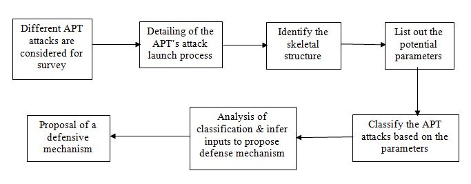
4. SURVEY
In order to come up with a skeletal structure capturing the potential differences among the APT attacks we have considered some of the APT attacks for our survey.
4.1 APT attacks
• Stuxnet
A worm which discovered in the year 2010 which attacks is targeted towards Reprogram Industrial Control Systems (ICS), On Programmable Logic Controllers (PLC) which are mostly related to the nuclear industry. Stuxnet is one of the early APT attacks known. Vast array of components are used for the attack like Zero-day exploits, Windows rootkit, PLC rootkit (first ever), Antivirus evasion, Peer-to-Peer updates, Signed driver with a valid certificate, Command and control interface. In 2007, Siemens industrial company has been attacked compromising Siemens PCS 7, WinCC and STEP7 industrial software applications along with one or more Siemens S7 PLCs.
The robust systems behind Stuxnet made it auto-executable, which required no user interaction,thus resulting in a zero-day vulnerability. Some of the vulnerabilities that were observed were MS 10-046: vulnerability which used modified autorun.inf technique MS08-067: Exploiting any network accessible windows systems using the windows server service. MS10-061: Vulnerabilities using privilege escalation using MS10-073 and MS10-092.
Attack launch process:
1. Target organization is Siemens industries.
2. Select a Siemens system for attack launch (OS).
3. Identify the network propagation (Network).
4. Launch the attack via a USB stick which infects all machines (Attack vector).
5. Compromise the target system’s logic controllers exploiting vulnerabilities (Signature Exploitation).
6. Download a more recent version and update the attack programming logic (Ease of spread).
7. Control the systems by spying and gather information (Attack purpose).
• Hacking team RCS
RCS is a spyware program discovered in 2011 which is targeted towards individuals like politicians, journalists and activists. The attack initially uses social engineering and then updates itself using the USB drives and cables. Rather than stealing data it surveillance the attacked systems. In 2012, all antivirus companies received malicious code in an email which they were able to identify from the keyword ‘RCS’ in that code.
Attack launch process:
1. Target individual will be selected.
2. Personal computer of the target individual is the target system (OS).
3. Launch the attack via CD-ROM or USB (Attack vector).
4. Compromise the internal security of the personal computer by exploiting the resources (Signature Exploitation).
5. Self-update based on the information in the personal computer (Ease of spread).
6. Monitor and log and actions performed in the personal computer (Attack purpose).
• Carbanak
An APT attack which was discovered in the year 2014 and still active. It mainly targets the financial organizations to steal the money. It has been the largest cyber heist ever in terms of stealing money. It uses the backdoor and exploit the target organization systems with the help of spam emails to the employees. Once the employee clicks on the spam email the attack will be launched and spreads over all the systems in that organization compromising the security.
Attack launch process:
1. Target financial organization (mostly banks) is selected.
2. Get the domain name of organization and send email to an employee (Attack vector).
3. If the system satisfies the OS version, the attack will be launched (OS).
4. Infects all the systems in the organization through the intranet used by the organization (Ease of spread).
5. Compromise the security by monitoring the employee system and change credentials (Signature Exploitation).
6. Once the attackers compromise the admin system, they steal the money (Attack purpose).
• Wild Neutron
It is a cyber espionage that was discovered in 2013 which is mainly targeted towards IT, healthcare, real estate, investment companies and law firms. It uses a backdoor module which initiates communication with C&C servers and then followed by exploitation tools, SSH-based exfiltration tools. Compromised the site ‘www.iphonedevsdk [.]com’ and redirected the users to other websites from where they hosted a zero-day exploit.
Attack launch process:
1. A multinational organization will be selected.
2. The website that belongs to the targeted organization will be compromised (Attack vector).
3. The users will be directed to the vulnerable sites from where they host a zero day exploit.
4. The attack will be launched in the system (OS).
5. Several exploitation tools are deployed which helps in spreading the attack (Ease of spread).
6. The information is passed onto the attackers (Attack purpose).
• Red October
A complex cyberattack platform discovered in the year 2013 which is targeted towards the reputed academia/research organizations, Energy, oil and gas companies and military as well. Malicious code was sent through emails using the Microsoft office, PDF, and java vulnerabilities. In 2012, the target companies have received an email with the updates for Microsoft office component, which compromises the security once they got clicked. The Domains were pointed to IP addresses that ended up just being proxies.As a strong persistent component, Red October introduced a module by inserting a malware visual basic code in the script written for Office and Adobe reader applications. This parsed each opened Office or PDF document and attempted to distinguish inserted commands (infused by the attackers) to execute. Utilizing this procedure, regardless of the fact that the C&C servers were brought down, the attackers could email exceptionally created files to their victims and can easily able to reconnect with their systems. The known vulnerabilities such as CVE-2009–3129, CVE-2010–3333 and CVE-2012–0158 that were found in the exploited documents was the first step to infect the targets. In some cases, a JAVA exploit CVE-2011- 3544 was also used to infect the systems with malware payloads.
Attack launch process:
1. Target organization will be identified.
2. A spear phishing mail is sent to the target organization (Attack vector).
3. When the user opens the spear phishing email the attack will be launched using the known exploits of MS office (Ease of spread).
4. The attacker sends the malicious code to work on windows knowing that most of the organizations use windows operating system (OS).
5. Once the attack is launched the malicious code operates and sends the confidential data to the attackers (Attack Purpose).
Observing the attack launch processes of different APT attacks that we have considered, we found a skeletal structure that captures the commonalities in different APT’s. The structure can be defined as a list of parameters which will be helpful for us in coming up with a defensive mechanism.
4.2 Parameters
• Targeted operating system and architecture
Operating system and its architecture are crucial enough during the initial stage of attack. The attackers may not be able to get through it if the configuration is different from the one that can be compromised.
(E.g. the malware might work only for 32-bit version of windows)
• Initial attack vectors
It is very crucial since this is the initial mode of propagation that helps the attackers to launch the attack. Identifying the different types of propagation used helps in detecting the APT’s at the initial stage itself.
• Attack purpose
The number APT attacks are constantly increasing over the last few years. These attacks are launched for achieving different purposes. Based on the purpose of attack the approach of the attack might differ from one another.
• Ease of spread
APT’s are known for their persistence. They remain undetected for years and keep on spreading until they were able to access the confidential data. In the process of accessing data different APT attacks will have to go through several backdoors which are opened once the security is breached.
• Exploitation of digital signatures/ confidentiality
APT’s are digitally signed using compromised digital certificates. Thus, these samples would manage to infect hardened systems. Based on this, allowing execution of binaries based on the existence of valid digital signatures cannot be considered an effective defense on its own. This is particularly important for Anti-Virus, which tend to avoid real-time analysis of signed binaries for performance reasons.
• Network Evaluation
The egress traffic which is destined to the commonly used ports is frequently allowed to pass through network access control mechanisms. The malwares use this common ports for establishing a connection and communicates back n forth - a worrying finding, taking into account the sensitive nature of the targeted organizations.
4.3 Attack Classification
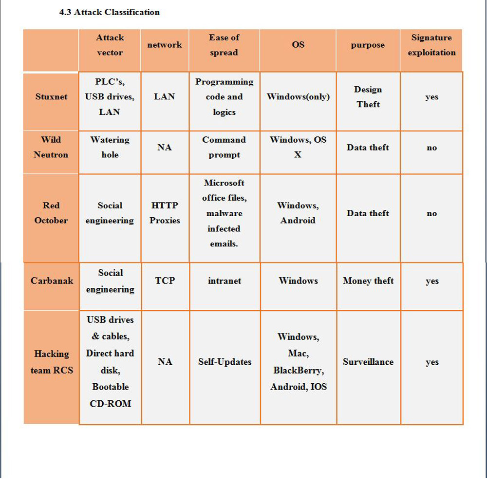
5. STUDY OF RELATED WORK
It can be found from the above classification that in maximum cases most of the systems with Windows as the operating system and their version being 32 bits. has compromised with their privacies and were found more vulnerable to Advanced persistent threats. In a related study presented by “Nikos, Virvilis” in his paper “Trusted computing vs APT” it can be concluded that none of the malware in all of the attacks were able to infect the 64 bits version of windows. This was because the extra security feature that is present in the 64-bit version of windows which makes the exploitation highly difficult for the attackers, especially preventing the kernel components of the system from getting accessed by malware targets.
According to the study, it can be said that the main reason of exploitation of 32 bit systems was, that the maximum number of the victims were using that architecture.
But does this make Apple ios more secured from APT’s? The answer is completely “NO”. Another study proposed by “Mathew J Schwartz” reveals that “ios” is relatively more easy to exploit as there are “Pervasive authentication issues” in OS X. and that it makes OS easy to exploit. Two of the mainly used protocols that are used in managing the functionalities of “IOS”, which consists of AFP (Apple Filling Protocol) and also Bonjour, a service delivery protocol that is used in establishing a connection between Macs and servers. Particularly, in comparison with windows it’s easy to replace a malicious server for a fake one and then forcing users to connect to it. These vulnerabilities provide a base for infecting Macs by APT’s
The above two related work in the field of APT’s contributes in concluding that because Apple’s market share is only about 6%, which means that if attacker want to compromise a large number of computers at once, they would typically go for “Windows”.
Another important point of entrance for APT’s found was malware infected Word and Excel documents. Analyzing the different versions of Microsoft office suite, it can be observed that from the release of MS Office 2010, a new feature of “Protected View “was added, which ensures the opening of files from untrusted source in a sandbox view which enabled the prevention of exploitation of system through these files. This default opening of any new file in protected mode, played a role of additional barrier which made malware unable to pass through it.
Furthermore, by digging into the analysis of the Victim’s system which were affected by such files, it can be concluded that either they were running outdated versions of MS Office or they had disabled the security feature of the software.
6. RESULTS
Based on the classification of attacks, we infer the following results:
The attack vectors that have been used for different APT attacks are the basic ways we use to transfer files over the internet or in person. It is our general tendency to not scan for any viruses if we use USB’s or CD-ROM’s when we do file sharing and when it comes to email we just go through the body of mail and do not pay any attention to the subject or from whom we have got the mail. The attackers take advantage of the user’s negligence in exploiting and attacking the systems.
Analyzing the network parameter tells us that most of the victims have a very relaxed internet access. The attackers identify the ports through which much of the traffic goes and launch the attack through that ports. As the network user is relaxed it paves way for the attackers to compromise the security and communicate back to the C&C infrastructure.
During the initial stage, the APT attacks are targeted towards stealing the confidential data from different organizations. But in later stages, APT’s are not only confined to steal data they have targeted several financial organizations in order to steal money and also to steal confidential designs of new ventures or on which the current system works.
For the APT to spread through the other systems it needs a medium. The medium turns out to be the vulnerable applications in the target systems. The attackers launch zero day exploits to cash on these vulnerabilities and the APT’s spread using these vulnerable applications. If we observe these applications, they are not the core applications of an operating system but the installed components for the user purpose. As the user uses them extensively for his purposes it feeds the APT to spread through the other systems.
The attackers also look after the operating system which they target as the malicious code is intended to work on it. From the attack classification table, we might come to the conclusion of windows as the most vulnerable operating system but as mentioned in the section 5, the OS X market share has been considerable very less compared to windows. As windows is the most used operating system, the attackers develop malicious code to run on windows so that they attack a wide range of systems at once.
Signature exploitation of significant applications and accessing the target systems using these signatures to compromise the security has been a major thing in many APT attacks. This tells us that the applications that user installs should also be taken care of. The users have the tendency to just install the application to satisfy their need without thinking much about its security concerns. This gives the attacker the chance to exploit and launch the attack.
7. PROPOSAL OF DEFENSE MECHANISM
Defensive measure 1:
• Multi layered networks with robust mechanisms should be used to prevent the APT attacks or at least detect the anomalies.
• The employees or individuals should be knowledgeable enough about how the APT attacks through social engineering so that they do not fall prey to spam emails and websites.
• There should be a security layer within each system so that the APT cannot access the resources in the personal computer of an individual or organization.
Defensive measure 2:
Inspired from batch processing in “Hadoop” an open source Real time computational system has been designed which functions on the method of multilayer “Gene Pool” which has a semantic-rich network behavior pattern contains inside it, which facilitates the detection of APT.
In Phase one a network packet is fetched from a network stream and is preprocessed and transformed to extract the appropriate message behavior information.
This information is sent to second and third phase which regulates the matching of message extracted in phase one with a semantic rich network behavior pattern and conclude the presence of anomaly if any.
Phase four is in charge of response towards anomaly either by anomaly alarm or recording the anomaly pattern directly.
8. CONCLUSION
APTs have turned into a significant concern for organizations from different fields. This pattern is not hinting any signs of slowdown. Because of their stealthiness and spotlight on information, APTs present a developing peril that is difficult to avert, distinguish and shield against. In the late years, we have seen various situations where APTs have brought on noteworthy harm to different associations, in type of information robbery, as well as quick physical harm.
APTs have an advanced way to deal with attacking organizations, they have the assets and learning, they don't stop surrender when they are unsuccessful, they cover their nearness, and they focus on association's important assets. Thus, new security methodologies are required. Associations can't depend on customary firewalls and malware discovery. They have to utilize different advanced intrusion detection tools and, in view of their exercises, develop new techniques for identifying abnormalities in a particular system, and correspond them keeping in mind the end goal to find security ruptures.
Despite the fact that there is no insurance that any system is totally secured, organizations can implement tools and security strategies that can extraordinarily decrease the danger of an attack. Notwithstanding, doing that requires learning, assets and time.
9. CHALLENGES FACED AND INSIGHTS GAINED
Challenges:
Even though APT has been a buzz word these days in the field of cyber security, it has been very difficult to get the required information about different APT’s and any ongoing related work. The challenge was to completely study the different types of attacks in detail to identify the significant features that can be used in our survey. Identifying the potential parameters to classify the attacks has been a major challenge since each APT is completely different from one another.
Insights Gained:
Human factors has been a major role in increase of APT attacks. From the results we have observed it can be said that the users have to careful enough without being negligible on securing their systems.
REFERENCES
[1] A. K. Sood and R. J. Enbody, “Targeted cyberattacks: A superset of advanced persistent threats,” IEEE Secur. Priv., vol. 11, no. 1, pp. 54–61, 2013.
[2] J. Vukalović and D. Delija, “Advanced Persistent Threats - Detection and defense,” 2015 38th Int. Conv. Inf. Commun. Technol. Electron. Microelectron. MIPRO 2015 - Proc., no. May, pp. 1324–1330, 2015.
[3] https://apt.securelist.com/#secondPage
[4] http://www.cs.arizona.edu/~collberg/Teaching/466-566/2012/Resources/presentations/2012/topic9-final/report.pdf
[5] http://www.forbes.com/2010/10/06/iran-nuclear-computer-technology-security-stuxnet-worm.html
[6] http://embeddedsw.net/doc/Stuxnet_white_paper.html
[7] https://www.cis.aueb.gr/Publications/ARES-2013%20APT%20Short.pdf
[8] https://securelist.com/blog/research/71275/wild-neutron-economic-espionage-threat-actor-returns-with-new-tricks/
[9] https://apt.securelist.com/#secondPage
[10] http://www.cs.arizona.edu/~collberg/Teaching/466-566/2012/Resources/presentations/2012/topic9-final/report.pdf
[11] http://www.forbes.com/2010/10/06/iran-nuclear-computer-technology-security-stuxnet-worm.html
[12] http://embeddedsw.net/doc/Stuxnet_white_paper.html
[13] https://www.cis.aueb.gr/Publications/ARES-2013%20APT%20Short.pdf
[14] https://securelist.com/blog/research/71275/wild-neutron-economic-espionage-threat-actor-returns-with-new-tricks/
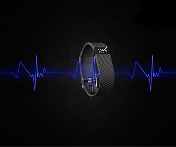
Dashboard Web Site Template
Stress Analysis Using Microsoft Band
Sarthak Bhatt Department of Information Systems
University of Maryland Baltimore County
Baltimore, MD, United States of America
sb11@umbc.edu
Sarthak Pathak Department of Information Systems
University of Maryland Baltimore County
Baltimore, MD, United States of America
sarthak1@umbc.edu
Abstract—This paper describes an approach to detect mental stress by collecting the heart related data such as heart rate, RR- interval, Skin temperature and GSR by wearing Microsoft Band around the wrist. The approach rest on the grounds of calculating mental stress by extracting several features from the above-mentioned data and testing the efficiency of different learning algorithms such as NaiveBayes, oneR, IBK, Decision tree and comparing it with the ground truth provided by the GSR. We validated the two methods one which had all attributes and the other which excluded skin temperature and timestamp. Our results indicated that the phase 2 which did not have skin temperature and timestamp as special features, gave the most accurate results for each algorithm and shown significant differences in results of every algorithm which proved valuable and helpful to validate it by generating a ROC curve and to get the most accurate measurement of subject’s mental stress through its heart rate. As Per our calculations and methodologies, IBK proved to be the best classification algorithm with accuracy of 86.95%.
Keywords—NaiveBayes, IBK, Heart Rate, RR, FFT, Stress, Classification algorithm, Microsoft band
I. INTRODUCTION
Stress is a universally experienced phenomenon in our modern lives. As per the studies, stress can play a role in psychological or behavioral disorders, such as depression and anxiety. Because stress imparts negative public health consequences, it is advantageous to consider automatic and ubiquitous methods for stress detection. Researchers have widely acknowledged that several physiological markers of stress have been identified, including electrodermal activity (EDA), heart rate (HR), various indices of heart rate variability (HRV), blood pressure (BP), muscle tension and respiration. The main motive behind this research is to identify how accurate wearable device are to analyze the real-time heart rate of a subject at different situations so that the raw data can be processed to detect the mental stress of the subject accurately.
To ensure management of stress at workplaces, wearable sensor is the best choice as it is unobtrusive and the person can perform tasks with complete freedom to avoid anxieties associated with wearing medical devices in public. Compared to conventional methods of monitoring stress, EDA is one of the most robust physiological indices of stress, but it need the placement of the electrodes in the fingers or palms of the hand or can be placed in feet but results vary depending on the posture. Another method which helps in long term monitoring
Abstract—This paper describes an approach to detect mental stress by collecting the heart related data such as heart rate, RR- interval, Skin temperature and GSR by wearing Microsoft Band around the wrist. The approach rest on the grounds of calculating mental stress by extracting several features from the above-mentioned data and testing the efficiency of different learning algorithms such as NaiveBayes, oneR, IBK, Decision tree and comparing it with the ground truth provided by the GSR. We validated the two methods one which had all attributes and the other which excluded skin temperature and timestamp. Our results indicated that the phase 2 which did not have skin temperature and timestamp as special features, gave the most accurate results for each algorithm and shown significant differences in results of every algorithm which proved valuable and helpful to validate it by generating a ROC curve and to get the most accurate measurement of subject’s mental stress through its heart rate. As Per our calculations and methodologies, IBK proved to be the best classification algorithm with accuracy of 86.95%.
Keywords—NaiveBayes, IBK, Heart Rate, RR, FFT, Stress, Classification algorithm, Microsoft band
I. INTRODUCTION
Stress is a universally experienced phenomenon in our modern lives. As per the studies, stress can play a role in psychological or behavioral disorders, such as depression and anxiety. Because stress imparts negative public health consequences, it is advantageous to consider automatic and ubiquitous methods for stress detection. Researchers have widely acknowledged that several physiological markers of stress have been identified, including electrodermal activity (EDA), heart rate (HR), various indices of heart rate variability (HRV), blood pressure (BP), muscle tension and respiration. The main motive behind this research is to identify how accurate wearable device are to analyze the real-time heart rate of a subject at different situations so that the raw data can be processed to detect the mental stress of the subject accurately.
To ensure management of stress at workplaces, wearable sensor is the best choice as it is unobtrusive and the person can perform tasks with complete freedom to avoid anxieties associated with wearing medical devices in public. Compared to conventional methods of monitoring stress, EDA is one of the most robust physiological indices of stress, but it need the placement of the electrodes in the fingers or palms of the hand or can be placed in feet but results vary depending on the posture. Another method which helps in long term monitoring of the stress is invasive as it needs the placement of needle in the arteries. Also, there are several invasive methods but they are equally cumbersome and inaccurate.
This research describes how different classification worked on heart rate to detect mental stress using unobtrusive wearable sensor (Microsoft Companion Band 2). The experiment was performed on only one subject to ensure continuous monitoring of stress and was put into different situations such as Exam, Office, Class etc. Heart rate data and RR interval data was collected, and using the python algorithms features were extracted like FFT, Mean for both RR and HR.
II. BACKGROUND
Researchers have been trying to come up with continuous monitoring of stress through various methodologies such as : Chen and Mukkamala came up with a theory of detecting stress through heart rate by investigating the effect of Parasympathetic nervous system (PNS) and Sympathetic nervous system (SNS) which results in increased heart rate and decreased heart rate, hence by analyzing fluctuations in beat-to-beat periods, one can easily distinguish the contribution of both PNS and SNS on heart rate. Also according to Backs the psychophysiological relationship is many-to-one if only heart rate is considered as physiological index.
They also proposed a system which relied on the approach of Linear-time-variant to model the transfer function between respiration and hart rate, but the use of LTI techniques implicitly assumes that the underlying signals are stationery and also it required blood pressure measurement and can only be tested using pharmacological blockade.
To eradicate such situation of unobtrusiveness, Jongyoon chhoi and Ricardo Gutierrez- Osuna decided to design and develop their own heart rate measuring wearable band on the grounds of considering heart rate as a non-linear time variant function of a dynamic system and was modeled with discrete time Volterra series.
Not only efforts were made to analyze stress through heart rate but also Paltial et al. proposed a model “Gaussian mixture model” for physical stress.Inducing stress through a rigrous exercise on a stepper at 10 miles per hour. Also a part of it consisted of all the female subject and made analysis through speech.
III. EXPERIMENTAL SETUP
Data Collection
We study stress by collecting data using Microsoft companion band 2. We choose Microsoft band 2 specifically because it gives the raw data as an output. We can collect several type of data like Heart Rate, RR, Accelerometer, Skin Temperature, Calories, GSR etc. through sensors. It comes with companion band Android/Iphone application through which raw data is stored in our phone memory. We can get data with proper timestamp and date. Initially we have collected data of several participants on a particular scenario. But later on we carried out our experiment only on a single participant for various scenarios and situation can be stressed or non-stressed. For a broad range we have six different scenarios like Presentation (Public speaking), Classroom, Work place, Driving (Listening music), Workout, Exam. These 6 scenarios are different to each other with different stress level. Some scenarios are stressed and some of them are not stressed. Subject will label each scenarios as stressed or non-stressed himself. We tried to collect heart rate (HR), RR (Heart rate variability), Skin Temperature, Galvanic skin resistance (GSR) from Microsoft band. We collect data from subject while participant is performing some task at a given scenario. We note the starting time and end time of the data collected. Then we ask participant to label the situation as stressed or non-stressed. Once subject manually label the data we save it in .csv file. After collecting all the data from several scenarios, we have created a single CSV file containing the Timestamp, TimeDate, HR, RR, Class(Stressed/Non-Stressed). We labelled stress as 1 and non-stress as 0.
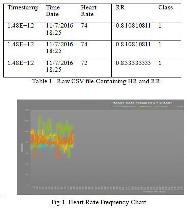
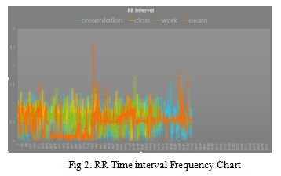
In our initial data collection, we tried to map heart rate and RR interval for 4 major scenarios i.e Presentation, Class, Work and Exam. We found that in Heart rate frequency chart the heart rate of exam scenario is the one with high peaks which is labeled as a stressed situation by a participant. We cannot conclude that having high heart rate is the best measure of stress as participant also labeled presentation as stressed situation but the heart rate frequency is down for that scenario. Same thing can be observed from the RR interval where some high peaks belongs to exam situation. But still not enough to determine which is the good feature to predict stress. So going further, we tried to preprocess our data and tried to extract some of the features from the HR and RR.
Preprocessing
After being manually labeled the data into 0 and 1 we tried to extract some features. We wrote a Python code to extract the features and store the it into the CSV file. Features that we extracted are Mean_RR, Mean_HR, Fast Fourier Transform (FFT) for HR and RR. We have selected FFT because Fourier analysis converts a signal from its original domain (often time or space) to a representation in the frequency domain and vice versa. We also took the mean of the RR interval and hear rate separately and stored it into the feature file. This also contains the class same as the raw csv file where 0 represents non-stressed and 1 represents stress. We also included skin temperature into the features file as according to [4] skin temperature reveals the intensity of acute stress. Stress cause rapid, short term drop in skin temperature in homeotherms. So including this feature an be useful even to compare the HR and RR with skin temperature.
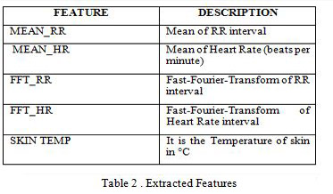
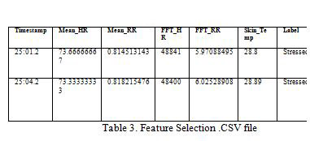
The above table shows the raw file attributes. The python code was written to extract features and put it into the csv file. After having all the features in a single file, we ran some classification algorithm to check the accuracy of each algorithm on this dataset and to compare which feature will give most accuracy.
Ground Truth
During stress, the human body goes into an alert mode resulting in increased skin conductance, which can be measured by a GSR sensor. We collected the GSR data during each iteration. There is a relationship between emotional arousal and sympathetic activity, although the electrical change alone does not identify which specific emotion is being elicited. These autonomic sympathetic changes alter sweat and blood flow, which in turn affects GSR The GSR sensor only used for ground truth purpose. So we collect the GSR data of the person in relaxed state called calibration phase provides baseline GSR reading. And also collect GSR data of a participant in active state (stress or non-stress). Then we subtract the both and measure the difference between two. So average increase in GSR ready is noted and hence we concluded that during exam and work session the average GSR reading increased. This result suggests that participant is reacting to stressors induced during both exam and work tasks.
IV. METHODOLOGY
We applied different classification model on the features we extracted from heart rate and RR. We have a training set and learning algorithms applied are Naïve bayes, OneR, IBK and Decision Tree. We expect the different accuracies on different algorithm but which algorithm fits well is what we need to find out, the experiment had run in two phases. In first phase, we included all the attributes and run the algorithm on that. First we tried Naïve Bayes algorithm and we got 95.55% accuracy. Next we tried IBk and it gave 100% accuracy. Along with this OneR and J48(DECISION TREE) also gave 100% accuracy. IBK took Mean_RR as the attribute and J48 took skin temperature as the root node. It doesn’t consider other attributes. It means this hypothesis is kind of bias.
Then in second phase we tried to exclude the skin temperature attribute and again applied the algorithm. Now the results we got are kind of different. The least accuracy we got is in Naïve Bayes algorithm was about 50.48%. and highest accuracy we
got is in IBK was about 86.95%. J48 took mean_hr as the root node feature which is having highest information gain. And IBK used Mean_RR feature attribute. It means that mean_rr and mean_hr are the good attribute to determine the stress from the heart beat and heart beat variability.
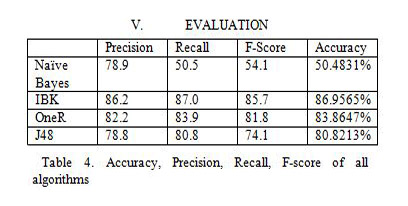
The algorithm which has the lowest mean absolute error and high accuracy is chosen as the best algorithm. In this classification, Naïve Bayes has the least value in all of the categories which are Precision, Recall, F-Score and Accuracy. also Naïve Bayes has the highest mean absolute error. On the other hand, IBK has the highest values of Precision, Recall, F-Score and is the most accurate classifier, the reason being it has the lowest mean absolute error.
The degree of correctness is evaluated using various classifiers for individual instances in the heart rate data set when time stamp and skin temperature was discarded and hence the larger the training set and the higher the classifier accuracy, the smaller the test set and the lesser the accuracy.
IBK: K‐NN is a supervised learning algorithm, where a given data set is partitioned into a user specified number of clusters, K. Predict the same class as the nearest instance in the training set. Training phase of the classifier stores the features and the class label of the training sets. New objects are classified based on the voting criteria. It provides the maximum likelihood estimation of the class. Euclidean distance metrics is used for assigning objects to the most frequently labelled class. Distances are calculated from all training objects to test object using appropriate K value. In this paper K value is assigned to 1 which shows that the chosen class label was the same as the one of the closest training object.
NAÏVE BAYES: In Naïve Bayes classifier attributes are conditionally independent. This greatly reduces the computation cost. It counts only the class distribution. There is m classes C1, C2… Cm. With tuples X = (x1, x2… xn), The Classification of such classes is derived using the maximum posteriori, i.e., the maximal P (Ci|X). This can be derived from Baye’s theorem. P(X) delete constant for all classes, only needs to be maximized. The goal of this classification is to correctly predict the value of a designated discrete class variable given a vector of attribute using 10-fold cross validation. Naïve Bayes classifier is applied to trained and test
set and the performance is evaluated individually with kappa statistics, error rate.
48 Classifier divides the training objects with a missing value. It provides fractional parts proportional to the frequencies of the observed non missing values. Cross validation is used to split the data sets into training and testing. It builds decision trees from a set of training and testing data. At each node of the tree, classifier chooses one attribute of the data that most effectively splits its set of samples into subsets enriched in one class or the other. The attribute with the highest normalized information gain is chosen to make the decision. This algorithm then recourses on the smaller sub list of the data sets.
Also to validate the accuracy results, all of the values were compared with the F-score of each classifier.
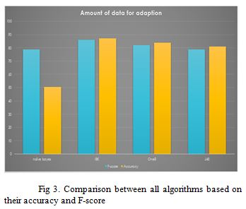
Furthermore, the performances of the classifiers can also be evaluated by generating ROC curve among them, which is as follows:
It can be observed from the above ROC that IBK is more inclined towards True Positive Rate and covers maximum area under the graph ensuring the maximum efficiency on the heart rate data set.
In case of Naïve Bayes, it is wiggly and could be the worst choice to be applied as classifier on the heart rate data set.
VI. CONCLUSION
IBK works best among all the classification algorithm with accuracy of 86.95% which could be high perceived stress recognition. Skin_temp and GSR are powerful to detect sympathetic changes. That’s why we used them as a ground truth. Their heart rate and RR(Hear rate variability) alone gives good stress detection accuracy. But different things have to be considered like environment, skin temperature, human voice, GSR. We applied linear correlation analysis to the features and we found that mean_heart rate and mean_rr are the most informative feature among all. While our study zoomed in on some self-reported stress or non-stressed state, our method is much more general and can be useful to understand which factors influence any identifiable affective changes. With rich data from real life, and the ability to reliably identify patterns relating it to affective state, people will soon be able to investigate how to not only measure, but also better improve affective conditions.
VII. LIMITATIONS
More number of subjects could be used. User label data can be incorrect which in turns differ the accuracy. Difference between Anxiety and Stress is not defined. Difficult to differentiate between Physical stress and mental stress. Using Microsoft band, data collected is good but while collecting
heart rate we got some data of Acquiring and Locked. Acquiring means band lost its connection with skin.
VIII. FUTURE ENHANCEMENT
We can take more features into account. Such as Respiratory input should be involved. Sentiment analysis can incorporate with this. Current model is built in such a way that user has to manually assign the label, instead of this we should build an unsupervised model which will assign the label by itself and it with the high accuracy. In our experiment we have used a whole scenario as a stress and non-stress but in real world stress can occur for a seconds, minute or a moment. It is hard to differentiate the anxiety with stress. As part of future work and building on our initial prototype implementation – we plan to design, deploy, and evaluate an app that harvests a diverse range of stress and non-stress scenario based on heart rate, RR, skin temp, GSR etc from Microsoft band and also speech data from phone calls and conversations. And then run the different algorithms on those data which will help to label the new data.
IX. ACKNOWLEDGMENT
This work is supported and guided by Dr. Nirmalya Roy, Prof. department of Information System at UMBC, Baltimore(MD). He provided us with all the required equipment, time and energy to assist us. Also we would like to thanks Sajjad M Hussain, Phd student, Department of Information systems, UMBC, Baltimore(MD) for helping us to create a python code to extract features from the raw data.
X. REFERENCES
[1] Association, A. H. (1996). Heart Rate Variability. Retrieved from http://circ.ahajournals.org/: http://circ.ahajournals.org/content/93/5/1043.long
Gutierrez-Osuna, J. C. (2009).
[2] Using Heart Rate Monitors to Detect Mental Stress . Body Sensor Networks.
Hong Lu, M. R.-P. (2012).
[3] StressSense: Detecting Stress in Unconstrained Acoustic. ACM digital library.
Katherine A. Herborn, ,. J. (2015).
[4] Skin temperature reveals the intensity of acute stress. ELSEVIER.
org, h. (2014, june).
[5] Stress and Heart Health. Retrieved from heart.org: http://www.heart.org/HEARTORG/HealthyLiving/StressManagement/HowDoesStressAffectYou/Stress-and-Heart-Health_UCM_437370_Article.jsp#


 Local politicians and press will help bolster influence through PR.
Phase two will be the technical development including database development, application
development, and membership card creation.The database containing barcodes and nutritional values
will be contracted out, as well as the database that will interact with the EatUp system. The
subcontractor will also provide maintenance services such as backups and updates for new products.
This will start upon receiving the first part of funding and will be complete in 90 days.The website
and mobile application will be developed in parallel with the database.The 3,000 EatUp membership
cards will be sourced out and printed as part of phase two.
When phase two is complete, EatUp will be able to go-live. From day one of go-live, the
team will be out in the communities recruiting participants. By not “pre-recruiting,” we hope to
avoid loss of interest, but gain word of mouth advertising in addition to standard methods such as
recruiting from churches, community health centers, health fairs, and local advertising opportunities.
The goal will be to achieve 3,000 signed up participants within 60 days.
The final phase is continuous monitoring and follow up. There will be evaluation periods at 6
month intervals that will include incentives to encourage participants to interact with our health
partners and update initial information (BMI). Over the life cycle of the project, the application will
be providing recommendations to the participants to change grocery shopping habits. Phase four of
the study will conclude after two years of following participants through the program.
Local politicians and press will help bolster influence through PR.
Phase two will be the technical development including database development, application
development, and membership card creation.The database containing barcodes and nutritional values
will be contracted out, as well as the database that will interact with the EatUp system. The
subcontractor will also provide maintenance services such as backups and updates for new products.
This will start upon receiving the first part of funding and will be complete in 90 days.The website
and mobile application will be developed in parallel with the database.The 3,000 EatUp membership
cards will be sourced out and printed as part of phase two.
When phase two is complete, EatUp will be able to go-live. From day one of go-live, the
team will be out in the communities recruiting participants. By not “pre-recruiting,” we hope to
avoid loss of interest, but gain word of mouth advertising in addition to standard methods such as
recruiting from churches, community health centers, health fairs, and local advertising opportunities.
The goal will be to achieve 3,000 signed up participants within 60 days.
The final phase is continuous monitoring and follow up. There will be evaluation periods at 6
month intervals that will include incentives to encourage participants to interact with our health
partners and update initial information (BMI). Over the life cycle of the project, the application will
be providing recommendations to the participants to change grocery shopping habits. Phase four of
the study will conclude after two years of following participants through the program.
 While the participants are only identified by a phone number and participant ID, security is
always of importance. Two levels of a firewall system will be used to maintain the confidentiality of
our users information, as well as help keep out any malware activities. The additional feature that
will be added for security is demonstrated in the diagram as a red line. The red line demonstrated
the high priority, which connects the development team directly to the serves with no other loads in
12 Kevitt, M. (April 2008). Best Software Test & Quality Assurance Practices in the project Life-cycle An approach to the creation of a process for improved test & quality assurance practices in the project life-cycle of an SME. (Unpublished master's thesis). Dublin City University. Retrieved March 04, 2016, from http://doras.dcu.ie/15089/1/Best_Software_Quality_Assurance_Practice_Process_in_the_project_Life.pdf
case. Therefore, if an event occurs in which the website or mobile application goes down, the
development team will be the first to be notified so that issues can be resolved quicker, rather than
getting information from users.
Required user information will be kept at a minimum. Beyond the initial testing participants,
mainstream account requirements will only include a phone number and age. All account
information will be tied to the phone number/created username rather than an individual’s actual
name.
While the participants are only identified by a phone number and participant ID, security is
always of importance. Two levels of a firewall system will be used to maintain the confidentiality of
our users information, as well as help keep out any malware activities. The additional feature that
will be added for security is demonstrated in the diagram as a red line. The red line demonstrated
the high priority, which connects the development team directly to the serves with no other loads in
12 Kevitt, M. (April 2008). Best Software Test & Quality Assurance Practices in the project Life-cycle An approach to the creation of a process for improved test & quality assurance practices in the project life-cycle of an SME. (Unpublished master's thesis). Dublin City University. Retrieved March 04, 2016, from http://doras.dcu.ie/15089/1/Best_Software_Quality_Assurance_Practice_Process_in_the_project_Life.pdf
case. Therefore, if an event occurs in which the website or mobile application goes down, the
development team will be the first to be notified so that issues can be resolved quicker, rather than
getting information from users.
Required user information will be kept at a minimum. Beyond the initial testing participants,
mainstream account requirements will only include a phone number and age. All account
information will be tied to the phone number/created username rather than an individual’s actual
name.